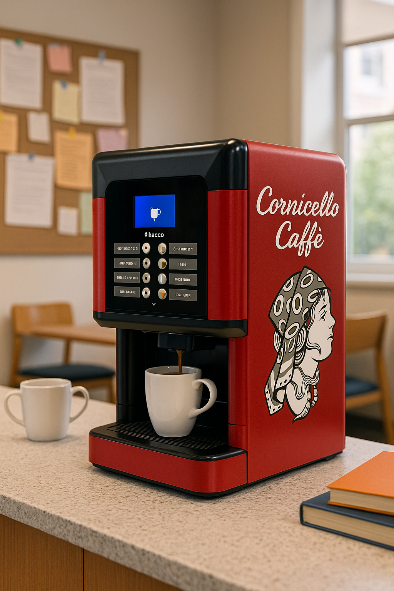

Selected for rich espresso, smooth milk drinks, and everyday consistency.

Premium coffee programs, self-service caffès, and mobile espresso service for workplaces, public spaces, and private events, planned with care for quality and waste reduction.
Barista-Quality.
Anywhere. Everywhere.
Machines, maintenance, menus, and service details handled with care.
Office lounges, public kiosks, espresso carts, and trailer experiences.
Right-sized supplies, smarter service planning, and lower-waste choices where possible.
Find your fit
Start with the setting.
Choose the service path closest to your space. Each page explains the format, ideal use case, pricing model, and next step.
Our name, Cornicello, pronounced kor-nee-chello, comes from the traditional Italian twisted horn-shaped chili pepper: a symbol of good luck, prosperity, and protection against negativity.
Much like the cornicello wards off bad energy, we see every cup we serve as a way to bring people together, lift spirits, and create something positive in the day.
Cornicello Caffè was created with the simple goal of bringing the artistry of Italian coffee culture to every corner of our community with exceptional quality, effortless service, moments worth savouring, and care for the footprint of each setup.
Our beans
Coffee selected for the whole caffè moment.
Every Cornicello setup starts with premium beans chosen for smooth espresso, dependable crema, and a balanced flavour profile that feels warm, rich, and easy to enjoy every day.
We think about the room before we think about the menu: the pace of an office lounge, the speed of a public kiosk, or the rhythm of an event. The beans need to perform beautifully from the first cup to the last, helping us plan inventory carefully and reduce unnecessary waste.

Selected for body, aroma, and a smooth finish.
Built to hold its flavour in cappuccinos and lattes.
Chosen for consistency across workplaces, venues, and events.
Environmental focus
Better coffee with a lighter footprint.
Right-sized service
We shape supplies around real employee, visitor, or guest counts to avoid over-ordering and excess waste.
Smarter serving choices
We can discuss lower-waste serviceware, refill rhythms, and practical options that fit your setting.
Efficient formats
Self-service stations, planned maintenance, and thoughtful menus help keep the experience polished without unnecessary extras.
Services
Caffè service shaped around the room.
From daily office coffee and breakroom stocking to high-traffic self-service stations and full event service, Cornicello Caffè makes premium hospitality feel effortless, memorable, and beautifully hosted.
Build your service package01
Workplaces
Machine subscriptions
Offices, lounges, waiting rooms, and boutique hotels.
A full-service espresso program stocked with premium beans and cared for by Cornicello, all for a simple monthly fee.
- Machine, beans, installation, and maintenance included.
- Pricing based on employee count or estimated visitors.
- Supply planning helps reduce overstock and avoidable waste.
- Espresso, cappuccino, latte, regular coffee, and daily classics.
02
Public spaces
Self-service caffès
Public venues, campuses, recreation centres, and high-traffic lobbies.
Compact tap-to-pay stations that bring quick, barista-quality drinks to busy spaces without adding operational effort.
- No upfront cost; customers simply tap to pay per drink.
- Premium drinks in seconds without sacrificing valuable space.
- Compact format supports lower-waste, demand-based service.
- Potential monthly revenue tied to usage milestones.
03
Events
Trailer and cart experience
Weddings, film sets, corporate events, and private celebrations.
A warm, mobile caffè presence with customizable menus, skilled service, and a setup tailored to your guest list.
- Custom menus for coffee creations and refreshing Italian sodas.
- Fixed pricing based on guest or crew count.
- Menus and quantities are planned around your actual guest list.
- Flexible service hours to suit the rhythm of the event.
04
Office supplies
Breakroom stocking
Coffee bars, staff kitchens, meeting rooms, and office pantries.
A hands-free way to keep everyday coffee and breakroom essentials stocked, organized, and aligned with your approved supply list.
- Cream, milk, sugar, sweeteners, cups, lids, stir sticks, and napkins.
- Tea, hot chocolate, water, juice, paper goods, and cleaning supplies.
- Weekly or scheduled restocking based on actual usage.
- Lower-waste and bulk options available where practical.
How it works
A polished caffè program, without the heavy lift.
Tell us the setting
Share the space, guest count, schedule, supply needs, and the kind of coffee moment you want to create.
We shape the setup
We recommend the right machine, kiosk, cart, menu, service flow, support plan, and waste-conscious serving approach.
Cornicello arrives
From installation to event service, we handle the details so every cup feels seamless and thoughtfully supplied.
FAQ
Quick answers before we talk details.
Where does Cornicello Caffè service?
We are Canadian grounded and focused on local service. Tell us your location and the service you need, and we will confirm availability for your workplace, venue, or event.
What information should I send for a quote?
Start with your location, employee or guest count, service type, preferred timing, and any supply, sustainability, or venue requirements.
Who handles installation, restocking, and maintenance?
Cornicello shapes the setup, service rhythm, supply planning, and maintenance approach around your site so the coffee program stays easy to run.
Can we combine coffee service with breakroom supplies?
Yes. Breakroom stocking can be paired with a machine program or planned as a standalone service for approved office supplies.
Contact us
Bring Cornicello Caffè to you.
Tell us about your space, traffic, guest list, and any sustainability priorities. We will shape the caffè around it.
Start with a few details.
Tell us which service you are interested in, where you are located, the employee, visitor, or guest count you have in mind, and any lower-waste serving preferences.